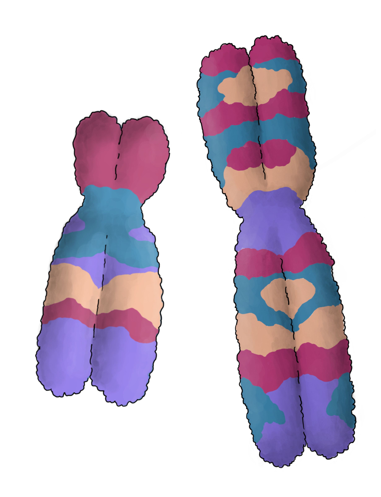
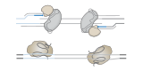
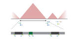

Engineering structural variation to understand human genome function.
We develop scalable genome-editing technologies to generate, genotype, and phenotype thousands of designed structural variants. Our goal is to map sequence dispensability, decode noncoding genome architecture, and lay the foundation for minimal mammalian genomes.
From designed variants to predictive genome biology
When do we truly understand a mammalian genome? Such understanding requires more than describing the function, or lack thereof, of each base pair. It also requires the ability to predict the consequences of sequence and structural variants and to design new genomes that function as intended. We still lack methods to systematically engineer genome architecture at larger scales through structural variation (SV).
Recent advances have begun to change this. A convergence of new genome engineering technologies has brought programmable SV engineering within reach, making this an especially exciting moment for the field. By combining genome engineering strategies such as prime editing, recombinases, and CRISPR-Cas3, we have generated highly engineered human cell systems that enable SV formation in mammalian genomes at an unprecedented scale. We pair these perturbation strategies with long-read sequencing, phage polymerase-based genotyping, and emerging single-cell approaches to directly resolve engineered variants and connect them to changes in fitness and gene expression.
Building on this foundation, our lab will develop and apply technologies to design, generate, and phenotype thousands of defined SVs, advancing a functional understanding of mammalian genome architecture, illuminating the mechanisms by which SVs cause disease, and laying the foundation for designing streamlined mammalian genomes.

Build high-throughput SV screening with multimodal readouts
Develop strategies to generate defined SVs across scales, directly read edit junctions, and link each variant to transcriptomic, chromatin, and fitness phenotypes at single-cell resolution.

Decode enigmatic non-coding elements by SV perturbation
Systematically perturb ultraconserved noncoding elements, transposable-element families, and large chromatin domains to uncover the elements and mechanisms that shape gene regulation.

Reveal genomic redundancies through minimized genomes
Identify the largest tolerated deletions, generate cells with megabase-sized deletions, and combine them with genome-wide knockout screens to uncover synthetic-lethal interactions and the design principles of robust genomes.
Jonas is a developer of new genomic technologies to understand biology. Previously, he was a postdoctoral researcher in the Shendure and Pinglay labs at the University of Washington and completed a PhD in Genomics at the Wellcome Sanger Institute and the University of Cambridge, where he worked with Leopold Parts. Outside the lab, he enjoys photography, drawing, skiing, reading, hiking, and racket sports.
News
Current and upcoming
2026
The Koeppel Lab is launching and recruiting its founding team.
2025
Our Science paper on genome randomization through recombination between repeat elements was published.
Contact
Koeppel Lab
European Molecular Biology Laboratory Genome Biology Unit Meyerhofstraße 1 69117 Heidelberg Germany